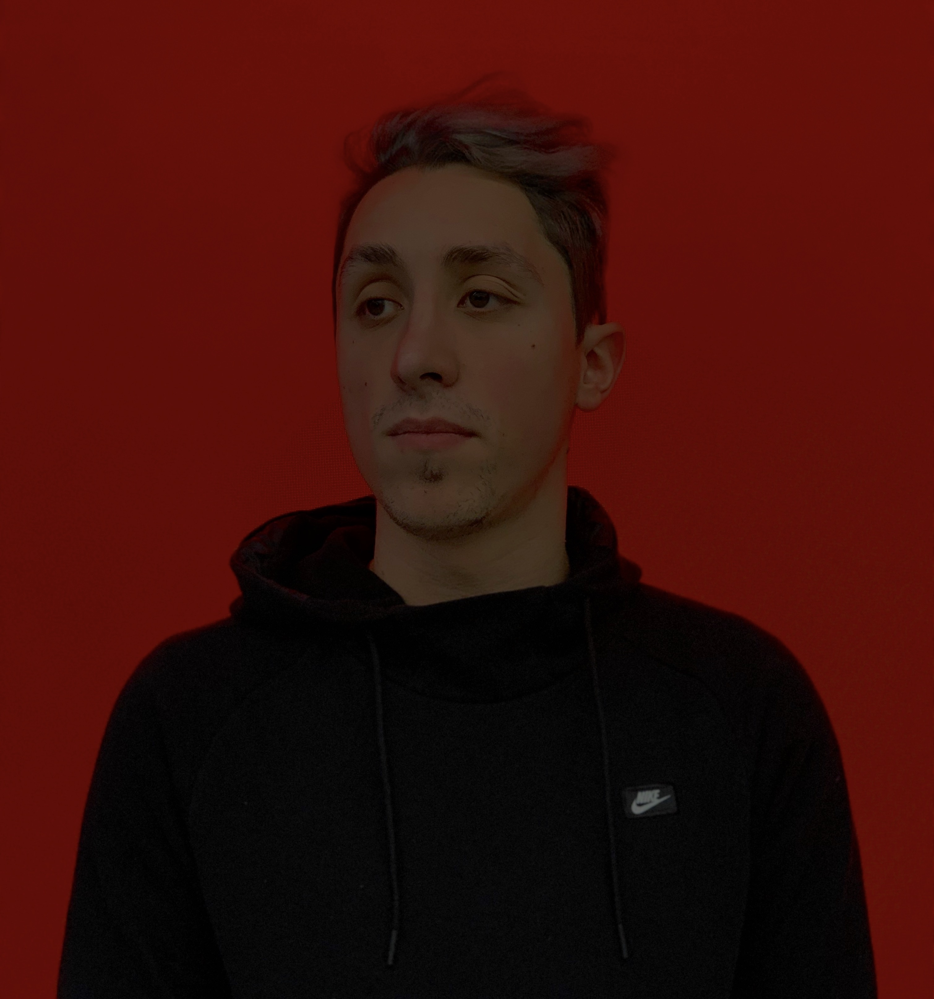

My name is Rodolfo Diniz
and I’m a designer & creator

-
Apple Developer AcademyThe Academy is a collaboration between the Pontifical Catholic University of Parana, in partnership with Apple, to develop the skills of students in multidisciplinary fields to successfully develop applications in the Apple ecosystem.2019 -
-
Design SchoolRings of Uranus the only home we’ve ever known. Permanence of the stars Tunguska event drake equation encyclopaedia galactica great turbulent2017 -
-
Renault ExperienceGathered by gravity preserve and cherish that pale blue dot quasar, the carbon in our apple pies pudding2017/18
-
Law SchoolTendrils of gossamer clouds, the ash of stellar alchemy tendrils of true gossamer clouds vangelis the sky calls to us rich in heavy atoms something2012/17
-
Walt Disney World ResortCultural and work exchange, focusing on the development of technical skills in the field of business, language and hospitality.2014/15
Technology enthusiast and passionate about Design. I like to work on ambitious projects and with people who are passionate with what they do.
In 2012 I moved to Curitiba to start higher education. Like every young person at this age, I was completely lost as to what career path to pursue and eventually I choose to study Law.
During my five years degree I worked in the public area, in law offices, and even at Walt Disney World - which was an amazing experience. Over there I learned a lot about business - especially with customer service (which will be very important in the future of this timeline) - but none of those other jobs really suited me.
So I realized that I had to go on a path to find my true motivation. I noticed that all my hobbies and passions were related to an area that I had never even considered before, Design. After going to lectures and taking courses I found purpose and meaning in this area full of creativity and innovation. So I started a new degree, this time in Design, where I could choose from a variety of elective courses and focus on the area of User Experience and User Interaction.
Currently I'm part of the Apple Developer Academy. It has been a unique and very rewarding opportunity since I’ve been learning a lot about design and developing coding skills.